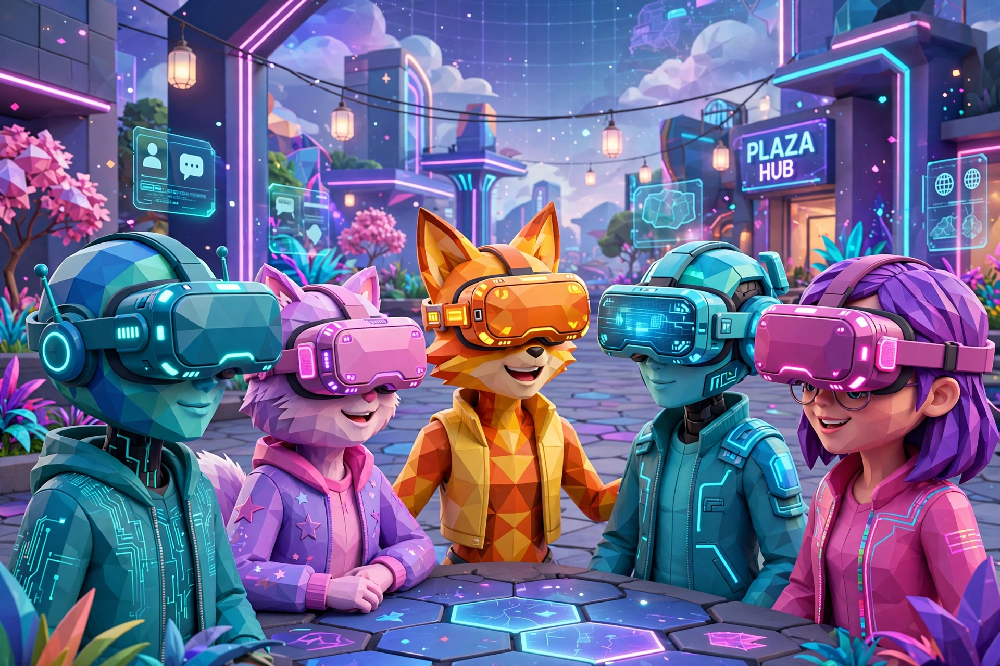

The metaverse is a loosely defined term referring to a hypothetical, immersive, persistent virtual world — typically accessed through virtual reality (VR) and augmented reality (AR) headsets — in which users, represented by avatars, can socialize, work, play, and trade digital goods across interconnected 3D spaces. The word was coined by Neal Stephenson in his 1992 science fiction novel Snow Crash, and the concept echoes in the "OASIS" of Ernest Cline's Ready Player One.

Precursors include text-based MUDs, Second Life (2003), and game platforms such as Roblox, Fortnite, and VRChat, which host concerts, social worlds, and user-created economies. Interest surged in October 2021 when Facebook, Inc. rebranded itself as Meta Platforms and announced massive investment in building the metaverse through its Reality Labs division and the Horizon Worlds platform. Other firms — Microsoft, Epic Games, Nvidia, and numerous blockchain-based projects such as Decentraland and The Sandbox — pursued competing visions, some emphasizing interoperability and digital property via NFTs.
Critics questioned the technology's readiness, user demand, privacy implications, and effects on mental health, and noted huge losses at Reality Labs (tens of billions of dollars cumulatively). By 2023–2024, industry attention shifted sharply toward artificial intelligence, and "the metaverse" was widely described as a deflated hype cycle, although development of VR/AR hardware (such as Meta's Quest headsets and Apple's Vision Pro spatial computer) continued.